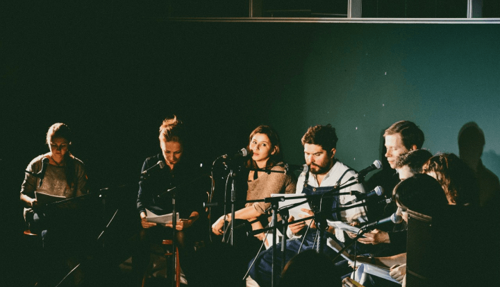
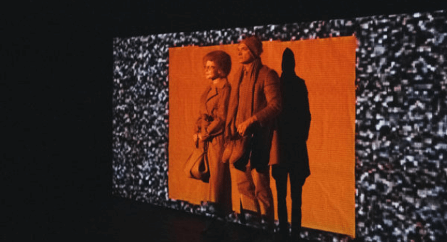

Любимовка существует благодаря энтузиазму
А также поддержке фондов, партнёров и пожертвований, которые покрывают неизбежные затраты.
Вход на все мероприятия фестиваля всегда был и будет бесплатным.
Если вы выберете ежемесячное пожертвование, его можно отменить в любом момент

На что пойдут ваши пожертвования
Проезд в Москву драматургов и отборщиков из других городов
Проживание в Москве драматургов и отборщиков из других городов и стран во время фестиваля
Зарплата администраторов и технического персонала
Полиграфия (дизайн и печать постеров и открыток)
Кофе, чай и печенье для участников фестиваля
Фестивальный on-line блог. Фото- и видеоотчёты
Канцелярские принадлежности, картриджи для принтеров, бумага для распечатки пьес
Создание, поддержка и развитие сайта
Открывающая и закрывающая вечеринки. Сувениры для участников и зрителей
Аренда театральных площадок

Что мы можем делать, если соберем достаточно средств
Система индивидуальных грантов, которые чтобы драматурги творили, не отвлекаясь на поиски источников дохода
Фестивальная газета
On-line база данных авторов, пьес и архив фестиваля
Продвижение драматургов в международные проекты
Привоз драматургов из других городов на лаборатории и показы в течение года
Вся отчётность о расходовании народных денег будет всегда доступна любому интересующемуся в самом подробном виде. Пишите на charity@lubimovka.ru